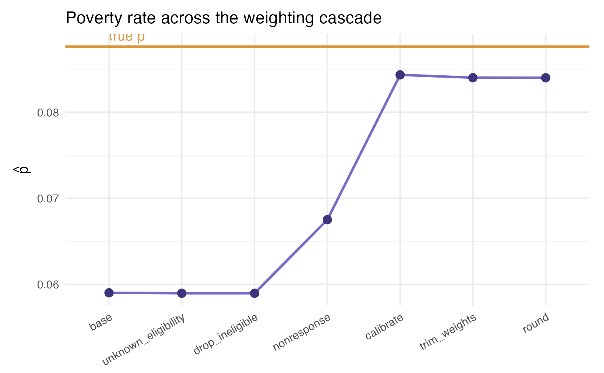
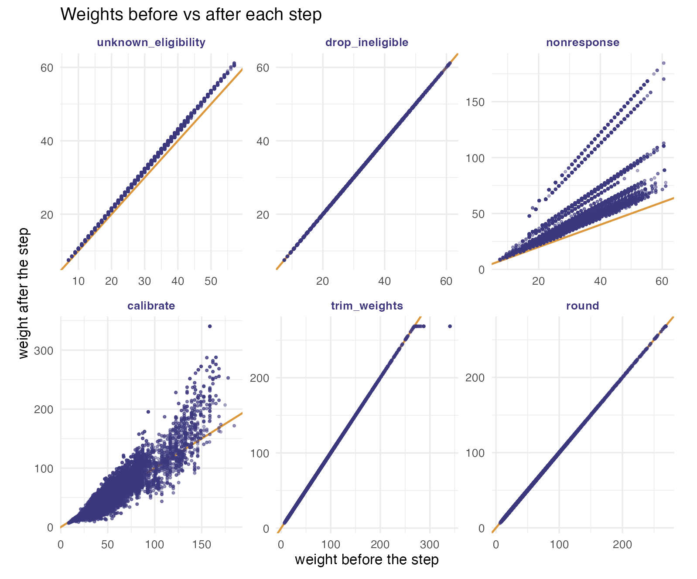
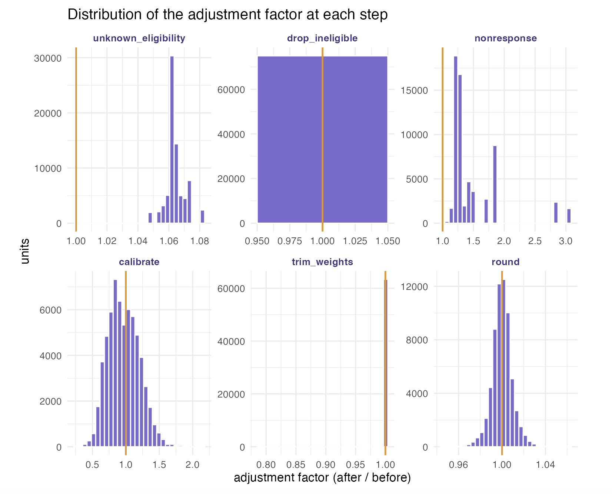
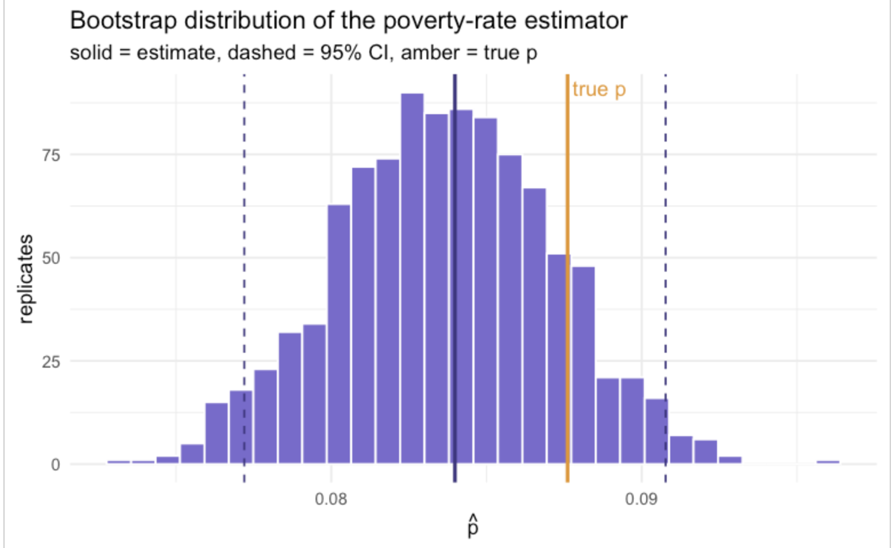

A full weighting pipeline on a real household survey (ECH 2019)
Source:vignettes/articles/ech-case-study.Rmd
ech-case-study.RmdDevelopment version. This case study uses a few features from the development version of weightflow (GitHub), not yet on CRAN: Potter MSE-optimal trimming (
method = "potter") and the R-indicator thatsummary()reports. Install withremotes::install_github("jpferreira33/weightflow"). The rest of the pipeline is on CRAN and unchanged.
This article puts the whole weightflow pipeline to work
on a real survey: the Uruguayan continuous household survey (Encuesta
Continua de Hogares, ECH 2019), released as open microdata by the
national statistical office (INE). It doubles as a stress test, since
the working sample has tens of thousands of records and the expanded
population has more than three million.
The published microdata contain only the eligible respondents. A real survey operation also faces ineligible units, units of unknown eligibility, and nonresponse, and none of those carry survey answers. To exercise the full pipeline we induce these outcomes on the public data in a reproducible (seeded) way, weight the survivors back to the population, and check how close we land to a known truth.
The target parameter is the poverty rate where if person is poor and is the population. The estimator is the weighted mean , and the weights travel through the cascade : design base weight, unknown-eligibility adjustment, nonresponse adjustment, calibration, and final trimming and rounding.
The code below is shown but not executed when this page is built, because the data download reaches the INE portal, which is not available from the build servers. The figures and tables are those produced by running the code locally.
library(weightflow)
library(dplyr)
library(tidyr)
library(haven)
library(archive)
library(ggplot2)
wf_violet <- "#3d3580"; wf_lav <- "#7a6ad0"; wf_amber <- "#e8941f"1. Download the ECH microdata
The INE publishes, on its ANDA portal, the ECH 2019 person/household file and a companion file with the stratum and primary sampling unit (PSU) of each household. We download both and unpack them.
dir_ine <- "ech_data"
if (!dir.exists(dir_ine)) dir.create(dir_ine)
f1 <- tempfile(fileext = ".rar")
download.file("https://www4.ine.gub.uy/Anda5/index.php/catalog/715/download/956",
f1, mode = "wb"); archive_extract(f1, dir = dir_ine)
f2 <- tempfile(fileext = ".rar")
download.file("https://www4.ine.gub.uy/Anda5/index.php/catalog/715/download/1154",
f2, mode = "wb"); archive_extract(f2, dir = dir_ine)2. Build the sample and the population
We keep the design identifiers (stratum, PSU, household), the calibration auxiliaries (region, sex, age), the outcome (poverty), and the ECH person weight. Each row is a person, and the design is two-stage: PSUs within strata, with the household as the last stage.
A key modelling choice: we set the base weight equal to the
individual ECH weight w_ech. With this
choice the base-weighted poverty rate reproduces the population rate
exactly, so the sample starts at the truth and any later gap is caused
by the problems we induce, not by the starting point. Expanding the
sample by w_ech gives the finite population U,
the ground truth.
df_raw <- read_sav(file.path(dir_ine, "HyP_2019_Terceros.sav"))
info <- read_sav(file.path(dir_ine, "ESTRATO_UPM_ECH2019.sav"))
df <- df_raw |>
left_join(info |> select(numero, estrato, upm_fic), by = "numero") |>
transmute(
id_household = numero,
person_number = nper,
strata = estrato,
psu = upm_fic,
region = as_factor(dpto),
sex = ifelse(e26 == 1, "male", "female"),
age = e27,
poverty = ifelse(pobre06 == 1, 1, 0),
w_ech = pesoano
) |>
mutate(base_weight = w_ech)
brks <- seq(0, 100, by = 5)
df <- df |> mutate(age_grp = cut(age, breaks = brks, right = FALSE))
sample_ech_full <- df |> select(-w_ech)
U <- df |> uncount(w_ech)
p_true <- mean(U$poverty) # 0.087613. Induce eligibility and response outcomes
Because the public file is all eligible respondents, we induce the operational outcomes at the household level: a dwelling is ineligible, of unknown eligibility, or a nonrespondent as a whole. Frame variables (region, stratum, PSU, base weight) stay known for every household. The survey variables (sex, age, poverty) are erased for problematic households, which collapse to a single row, because in practice their roster is never observed.
Nonresponse is missing-at-random and coherent with reality: the poorest strata (the low-numbered ones) respond less, and younger households respond less too. Since poverty is concentrated in the low strata and among the young, this makes the poor under-represented among respondents, the direction a real survey faces. The stratum part is recoverable by the class adjustment; the age part is left for calibration to recover through the age margins.
set.seed(2023)
hh <- sample_ech_full |>
group_by(id_household) |>
summarise(strata = first(strata), psu = first(psu), region = first(region),
base_weight = first(base_weight), mean_age = mean(age),
.groups = "drop")
u <- runif(nrow(hh))
hh$ineligible <- as.integer(u < 0.04)
hh$unknown_elig <- as.integer(u >= 0.04 & u < 0.10)
hh$eligible <- as.integer(u >= 0.10)
sn <- suppressWarnings(as.numeric(as.character(hh$strata)))
strata_logit <- ifelse(sn <= 2, -0.8,
ifelse(sn <= 5, 0.0,
ifelse(sn <= 10, 0.9, 1.5)))
strata_logit[is.na(strata_logit)] <- 0.9
p_resp <- plogis(strata_logit + 0.040 * (hh$mean_age - 40))
hh$responded <- 0L
elig <- hh$eligible == 1
hh$responded[elig] <- rbinom(sum(elig), 1, p_resp[elig])
resp_hh <- hh$id_household[hh$responded == 1 & hh$eligible == 1]
persons_resp <- sample_ech_full |>
filter(id_household %in% resp_hh) |>
left_join(hh |> select(id_household, ineligible, unknown_elig, responded),
by = "id_household") |>
select(id_household, person_number, strata, psu, region, base_weight,
sex, age, age_grp, poverty, ineligible, unknown_elig, responded)
prob_hh <- hh |>
filter(!(responded == 1 & eligible == 1)) |>
transmute(id_household, person_number = 1L, strata, psu, region, base_weight,
sex = NA_character_, age = NA_real_,
age_grp = factor(NA, levels = levels(df$age_grp)),
poverty = NA_real_, ineligible, unknown_elig, responded)
sample_ech <- bind_rows(persons_resp, prob_hh) |>
arrange(id_household, person_number)4. Build calibration targets from the population
Calibration needs population totals for the margins. A statistical
office reads these from population projections; here we read them from
U. We calibrate to the number of people by five-year age
group, by sex, and by region, building the totals with the same model
matrix the recipe will use. After dropping the ineligibles the sample
represents the eligible population, which is smaller than all of
U; since eligibility was induced at random, we scale the
totals by the eligible share.
elig_factor <- mean(hh$eligible)
cal_formula <- ~ age_grp + sex + region
XU <- model.matrix(cal_formula, data = U)
totals <- colSums(XU) * elig_factor5. The weighting recipe
We pipe the whole cascade. The eligibility and nonresponse
adjustments use cluster = "id_household", so they act at
the dwelling level, matching how the outcomes were induced. The
calibration step uses linear distance with
equal_within_cluster = TRUE, which produces a single weight
per household (integrated household weighting, Lemaitre-Dufour), as an
official household survey requires.
fitted <- weighting_spec(sample_ech, base_weights = base_weight) |>
step_unknown_eligibility(unknown = unknown_elig == 1, by = "region",
cluster = "id_household") |>
step_drop_ineligible(ineligible = ineligible == 1) |>
step_nonresponse(respondent = responded, method = "weighting_class",
by = "strata", cluster = "id_household") |>
step_calibrate(method = "linear", formula = cal_formula, totals = totals,
cluster = "id_household", equal_within_cluster = TRUE) |>
step_trim_weights(method = "potter") |>
step_round(digits = 0, method = "preserve_total") |>
prep()
summary(fitted)The stage summary reports, for each step, the number of active units, the sum of weights, the coefficient of variation of the weights, the Kish design effect and the effective sample size.
| stage | n_active | sum_wts | cv_wts | deff_kish | n_eff |
|---|---|---|---|---|---|
| base | 79178 | 2467595 | 0.279 | 1.078 | 73456 |
| unknown_eligibility | 76624 | 2546261 | 0.278 | 1.077 | 71141 |
| drop_ineligible | 74991 | 2495751 | 0.277 | 1.076 | 69665 |
| nonresponse | 63423 | 3144040 | 0.481 | 1.231 | 51502 |
| calibrate | 63423 | 3171410 | 0.650 | 1.423 | 44573 |
| trim_weights | 63423 | 3171410 | 0.647 | 1.419 | 44703 |
| round | 63423 | 3171410 | 0.647 | 1.419 | 44703 |
The design effect rises with the nonresponse and calibration steps (unequal weighting costs precision) and is held back slightly by trimming.
6. The estimate against the truth
We compute at each stage of the cascade and compare it with the true rate . The naive (base-weight) estimate is biased downward, because the poor responded less. The nonresponse adjustment by stratum recovers the between-strata part of that bias, and calibration to age, sex and region recovers the rest.
y <- sample_ech$poverty
stage_phat <- sapply(fitted$history, function(w) {
ok <- w > 0 & !is.na(y); sum(w[ok] * y[ok]) / sum(w[ok])
})
labs <- gsub("^stage_[0-9]+_step_", "", names(stage_phat))
est <- data.frame(stage = factor(labs, levels = labs), phat = stage_phat)
ggplot(est, aes(stage, phat, group = 1)) +
geom_hline(yintercept = p_true, color = wf_amber, linewidth = 1) +
annotate("text", x = levels(est$stage)[1], y = p_true, label = "true p",
vjust = -0.6, hjust = 0, color = wf_amber) +
geom_line(color = wf_lav, linewidth = 1) +
geom_point(color = wf_violet, size = 3) +
labs(x = NULL, y = expression(hat(p)),
title = "Poverty rate across the weighting cascade") +
theme_minimal(base_size = 12) +
theme(axis.text.x = element_text(angle = 30, hjust = 1))| stage | distance to | |
|---|---|---|
| base | 0.05901 | -0.02860 |
| unknown_eligibility | 0.05896 | -0.02865 |
| drop_ineligible | 0.05896 | -0.02865 |
| nonresponse | 0.06750 | -0.02011 |
| calibrate | 0.08433 | -0.00328 |
| trim_weights | 0.08399 | -0.00362 |
| round | 0.08398 | -0.00363 |

Each adjustment moves the estimate toward the truth: the nonresponse step lifts it from the badly biased base, and calibration brings it close to . A small residual gap remains, which is honest and expected, since the adjustments use only the frame and the calibration margins.
7. Per-step weight diagnostics
We inspect what each step does to the weights. First, a scatter of the weight before versus after each step: points on the amber diagonal were left untouched, points off it were reweighted. The integrated household calibration shows up as aligned points, because every member of a household receives the same factor.
h <- fitted$history
labs <- gsub("^stage_[0-9]+_step_", "", names(h))
pairs <- bind_rows(lapply(seq_len(length(h) - 1L), function(i) {
prev <- h[[i]]; cur <- h[[i + 1L]]; keep <- prev > 0 & cur > 0
data.frame(step = factor(labs[i + 1L], levels = labs[-1]),
prev = prev[keep], cur = cur[keep])
}))
ggplot(pairs, aes(prev, cur)) +
geom_abline(slope = 1, intercept = 0, color = wf_amber, linewidth = 0.7) +
geom_point(color = wf_violet, alpha = 0.2, size = 0.6) +
facet_wrap(~ step, scales = "free", ncol = 3) +
labs(x = "weight before the step", y = "weight after the step",
title = "Weights before vs after each step") +
theme_minimal(base_size = 11) +
theme(strip.text = element_text(color = wf_violet, face = "bold"))
Second, the distribution of the adjustment factor (the weight after the step divided by the weight before). A factor of one (the amber line) means the step left a unit untouched; mass away from one shows where, and how hard, the step worked.
ggplot(pairs |> mutate(factor = cur / prev), aes(factor)) +
geom_histogram(bins = 30, fill = wf_lav, color = "white") +
geom_vline(xintercept = 1, color = wf_amber, linewidth = 0.7) +
facet_wrap(~ step, scales = "free", ncol = 3) +
labs(x = "adjustment factor (after / before)", y = "units",
title = "Distribution of the adjustment factor at each step") +
theme_minimal(base_size = 11) +
theme(strip.text = element_text(color = wf_violet, face = "bold"))
The Kish design effect summarises the variance cost of unequal weights at each stage.
data.frame(
stage = labs,
deff = round(vapply(h, function(w) design_effect(w)$deff, numeric(1)), 3)
)| stage | deff |
|---|---|
| base | 1.078 |
| unknown_eligibility | 1.077 |
| drop_ineligible | 1.076 |
| nonresponse | 1.231 |
| calibrate | 1.423 |
| trim_weights | 1.419 |
| round | 1.419 |
8. Design-based inference: bootstrap and 95% CI
The variance must reflect the design (PSUs within strata) and the
fact that the recipe is re-estimated on each replicate.
bootstrap_weights() resamples PSUs within strata (Rao-Wu
rescaling) and re-applies the whole recipe; boot_mean()
returns the estimate, its standard error and a 95% interval (a normal
interval around the point estimate).
boot <- bootstrap_weights(fitted, replicates = 1000, strata = "strata", psu = "psu")
ci <- boot_mean(boot, "poverty")
ciThe empirical distribution of across the replicates shows the sampling variability behind that interval. The 95% interval covers the true poverty rate (the amber line), so the design-based inference works: the pipeline recovers the population poverty rate with honest uncertainty.
reps <- apply(boot$replicates, 2, function(w) {
ok <- w > 0 & !is.na(y); sum(w[ok] * y[ok]) / sum(w[ok])
})
ggplot(data.frame(phat = reps), aes(phat)) +
geom_histogram(bins = 30, fill = wf_lav, color = "white") +
geom_vline(xintercept = ci$estimate, color = wf_violet, linewidth = 1) +
geom_vline(xintercept = c(ci$ci_lower, ci$ci_upper), color = wf_violet,
linetype = "dashed") +
geom_vline(xintercept = p_true, color = wf_amber, linewidth = 1) +
annotate("text", x = p_true, y = Inf, label = "true p", vjust = 1.4,
hjust = -0.1, color = wf_amber) +
labs(x = expression(hat(p)), y = "replicates",
title = "Bootstrap distribution of the poverty-rate estimator",
subtitle = "solid = estimate, dashed = 95% CI, amber = true p") +
theme_minimal(base_size = 12)
Performance
This also serves as a light stress test. On a MacBook Air (Apple M4, 16 GB RAM, macOS 26.3), running R, the full recipe on about 79,000 records (eligibility, nonresponse, integrated household calibration, trimming and rounding) takes well under a second:
#> Recipe (prep) elapsed: 0.45 secondsThe bootstrap is the heavy part, because it resamples PSUs within strata and re-applies the entire recipe on each of the 1000 replicates:
#> Bootstrap (1000 replicates) elapsed: 343.59 secondsSo the point estimate and all its diagnostics are essentially instant, and full design-based inference with a thousand replicates takes a few minutes on a laptop.
Notes
Everything is reproducible from the public ECH file plus the seeded code, so the induced outcomes and the resulting weights are identical on every run. The residual gap between the final estimate and the truth is a faithful reminder that weighting reduces nonresponse bias substantially but, when the response mechanism depends on more than the frame and the calibration margins, does not erase it entirely.